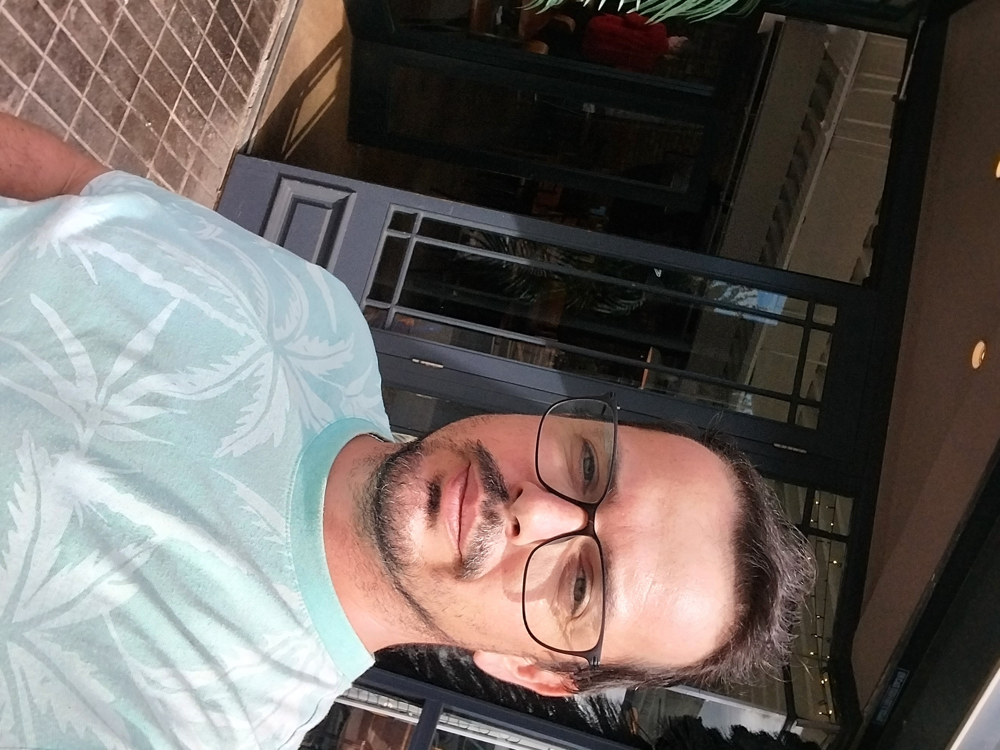

João Correia

Summary
I have always worked for companies in the area of electricity and fiber optic networks, having moved to the financial markets in the last two years, my goal at the moment is to learn to program where I am currently taking a web development course.
Education
- I finished secondary school in sports, Escola Antonio Gedeão - Almada, Portugal ( 2005 ).
- Course in Financial management, private since 2022.
- Fiber optic course at CMR-TELECOM, Metz- France 2020.
- Electrician course at the company TECNIMIL, Lisbon in 2008.
Work experience
-
-
FIBER TECHNICIAN - Gaeltec
-
01/2023 – 12/2023 Ireland
-
Installed and repaired fiber optic cables for network
telecommunications, ensuring communication infrastructure
efficient.
-
Tests performed and problems resolved with power connections
optical fiber to ensure optimal performance.
-
Provided technical support and resolved customer queries
connections and equipment related to fiber optics.
-
-
NETWORK TECHNICIAN AND ELECTRICIAN - Aras Sirirni
-
01/2022 – 12/2022 Rotterdam, Netherlands
-
Extensive knowledge of electrical systems and equipment, with
three years of experience as an electrician.
-
Proven track record of successful installation and configuration
network hardware and software.
-
Specialist in electrical diagnosis and repairs and problems
related to the network efficiently and effectively
-
-
FIBER CABLE TECHNICIAN - CMR TELECOM
-
04/2020 – 12/2021 Metz, France
-
Fiber optic cables installed and terminated for network
telecommunications, ensuring adequate connectivity and
signal strength.
-
Performed fiber optic testing and troubleshooting for
identify and resolve connectivity issues for customers.
-
Collaborated with team members to install and maintain
fiber optic infrastructure, ensuring optimal operation
of network systems.
Skills
- Visionary for a new future
- Commitment to work
- Responsible to everyone
- I like discovering new trends
Other